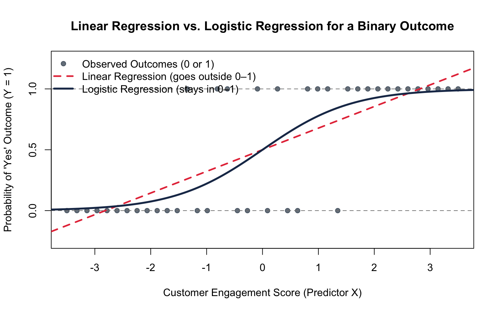
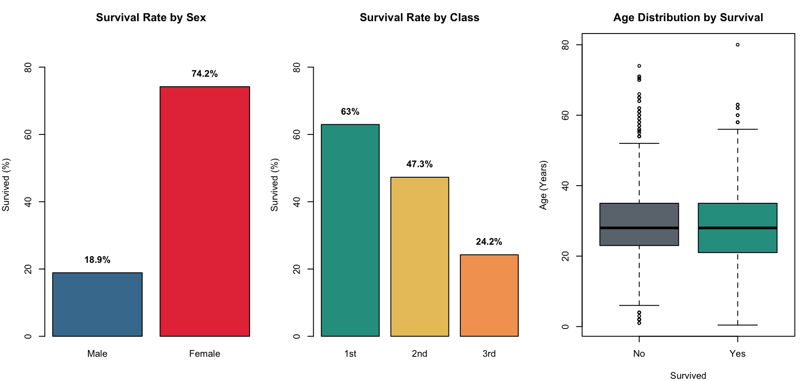
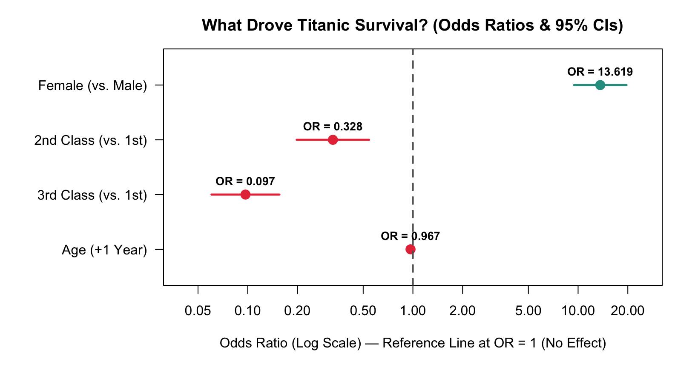
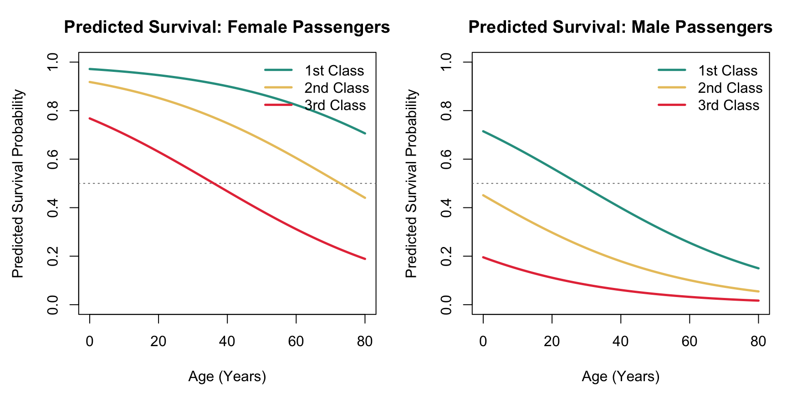

In business analytics, many of the most important questions do not have a continuous numerical answer—they have a Yes/No outcome:
- Will a customer buy or not buy after seeing an ad?
- Will a subscriber churn or stay next month?
- Will a loan applicant repay or default?
- Did a passenger on the Titanic survive or not survive?
When our outcome variable has only two possible categories (coded as 1 for “Yes” and 0 for “No”), standard linear regression is the wrong tool. Instead, we use Binary Logistic Regression.
In this tutorial, you will learn how binary logistic regression works without heavy mathematics, how to prepare and explore the complete Titanic passenger dataset (titanic.csv) in R, how to fit logistic regression models with glm(), and—most importantly—how to read and interpret every part of R’s output.
1. Why Not Use Linear Regression?
In Linear Regression, we fit a straight line to predict a continuous number (like sales revenue or fuel efficiency). If we try to fit a straight line to a 0/1 Yes/No outcome, two problems happen:
- Impossible predictions: A straight line keeps going forever, so it can predict probabilities below
0%(like-15%) or above100%(like125%), which makes no sense for a probability. - Unequal effects: Going from a 10% to a 20% chance of buying is different from going from a 90% to a 100% chance, so relationships are naturally curved rather than flat straight lines.
Logistic regression solves this by bending the straight line into a smooth S-shaped curve (called the sigmoid or logistic curve). No matter what values your predictors have, the predicted probability always stays safely between 0 and 1 (0% and 100%).
2. Three Everyday Terms: Probability, Odds, and Log-Odds
Before looking at R output, there are just three connected ideas you need to understand. You do not need to memorize calculus—just how these three scales translate into each other:
Probability (\(p\)): The chance an event happens, from
0(0%) to1(100%).
Example: If 75 out of 100 customers renew their subscription, the probability is \(p = 0.75\) (or 75%).Odds: The ratio of “Yes” to “No”: \[\text{Odds} = \frac{p}{1 - p}\] Example: If \(p = 0.75\), then \(1 - p = 0.25\). The odds are \(\frac{0.75}{0.25} = 3\) (spoken as “3 to 1 odds”—you are 3 times as likely to renew as not renew).
- When \(p = 0.50\) (a 50/50 coin flip), \(\text{Odds} = 1\).
- When \(p > 0.50\), \(\text{Odds} > 1\).
- When \(p < 0.50\), \(\text{Odds} < 1\).
Log-Odds (Logit): The natural logarithm of the odds, \(\ln(\text{Odds})\).
R estimates the regression equation on the log-odds scale because log-odds can range smoothly from \(-\infty\) to \(+\infty\), allowing R to fit a simple linear combination of your predictors: \[\text{Log-Odds} = \beta_0 + \beta_1 X_1 + \beta_2 X_2 + \dots\]
| Probability (\(p\)) | Odds \(\left(\frac{p}{1 - p}\right)\) | Log-Odds \(\ln(\text{Odds})\) | Plain-English Meaning |
|---|---|---|---|
10% (0.10) |
0.11 |
-2.20 |
Very unlikely (“1 to 9 odds”) |
25% (0.25) |
0.33 |
-1.10 |
Unlikely (“1 to 3 odds”) |
50% (0.50) |
1.00 |
0.00 |
Even 50/50 chance (“1 to 1 odds”) |
75% (0.75) |
3.00 |
+1.10 |
Likely (“3 to 1 odds”) |
90% (0.90) |
9.00 |
+2.20 |
Very likely (“9 to 1 odds”) |
Practical Takeaway for Business Students:
R reports coefficients in log-odds (hard to read directly). One simple function—exp()—converts log-odds into Odds Ratios, andpredict(..., type = "response")converts them into Probabilities (0%–100%).
3. Dataset Description: The Titanic Passenger Dataset
For this tutorial, we use the classic Titanic passenger dataset (titanic.csv), popularized by Kaggle’s Titanic: Machine Learning from Disaster competition and described in beginner data science guides such as Beginner’s Guide to ML with the Titanic Dataset.
The dataset contains 891 passenger records and 12 variables capturing demographic details, socio-economic status, family ties, ticket pricing, and survival outcome:
| Variable | Role | Type | Description & Values |
|---|---|---|---|
Survived |
Target (Outcome) | Binary (0 / 1) |
Survival status: 0 = Did not survive, 1 = Survived. |
Pclass |
Feature | Categorical / Ordinal | Passenger ticket / socio-economic class: 1 = 1st Class (Upper), 2 = 2nd Class (Middle), 3 = 3rd Class (Lower). |
Sex |
Feature | Categorical | Biological gender of the passenger (male or female). |
Age |
Feature | Numerical | Passenger’s age in years (fractional for infants under 1 year; contains missing values). |
SibSp |
Feature | Numerical (Count) | Number of siblings (brother, sister, step-sibling) or spouses (husband, wife) aboard. |
Parch |
Feature | Numerical (Count) | Number of parents or children traveling with the passenger (0 if traveling with a nanny only). |
Fare |
Feature | Numerical | Price paid for the ticket (in British pounds). |
Embarked |
Feature | Categorical | Port where the passenger boarded: C = Cherbourg, Q = Queenstown, S = Southampton. |
PassengerId |
Identifier | Integer | Unique ID number assigned to each passenger (1 to 891). |
Name |
Text Identifier | Text | Full name and title (e.g., Mr., Mrs., Miss, Master) of the passenger. |
Ticket |
Text Identifier | Alphanumeric | Ticket reference number. |
Cabin |
Feature (Sparse) | Alphanumeric | Cabin number (missing for most passengers). |
4. Loading and Cleaning the Data in R
Let’s load titanic.csv using base R (read.csv()), inspect its structure, and check where values are missing. Notice we pass na.strings = c("", "NA") so blank cells (such as missing Cabin or Embarked entries) are properly recognized as NA.
# 1. Load the Titanic dataset from CSV
titanic_raw <- read.csv("titanic.csv", na.strings = c("", "NA"))
# Check dimensions (rows and columns) and structure
dim(titanic_raw)[1] 891 12str(titanic_raw)'data.frame': 891 obs. of 12 variables:
$ PassengerId: int 1 2 3 4 5 6 7 8 9 10 ...
$ Survived : int 0 1 1 1 0 0 0 0 1 1 ...
$ Pclass : int 3 1 3 1 3 3 1 3 3 2 ...
$ Name : chr "Braund, Mr. Owen Harris" "Cumings, Mrs. John Bradley (Florence Briggs Thayer)" "Heikkinen, Miss. Laina" "Futrelle, Mrs. Jacques Heath (Lily May Peel)" ...
$ Sex : chr "male" "female" "female" "female" ...
$ Age : num 22 38 26 35 35 NA 54 2 27 14 ...
$ SibSp : int 1 1 0 1 0 0 0 3 0 1 ...
$ Parch : int 0 0 0 0 0 0 0 1 2 0 ...
$ Ticket : chr "A/5 21171" "PC 17599" "STON/O2. 3101282" "113803" ...
$ Fare : num 7.25 71.28 7.92 53.1 8.05 ...
$ Cabin : chr NA "C85" NA "C123" ...
$ Embarked : chr "S" "C" "S" "S" ...Let’s preview the first few rows and summarize missing values across all 12 columns:
# Preview the first 6 passengers
head(titanic_raw[, c("PassengerId", "Survived", "Pclass", "Sex", "Age", "Fare", "Embarked")]) PassengerId Survived Pclass Sex Age Fare Embarked
1 1 0 3 male 22 7.2500 S
2 2 1 1 female 38 71.2833 C
3 3 1 3 female 26 7.9250 S
4 4 1 1 female 35 53.1000 S
5 5 0 3 male 35 8.0500 S
6 6 0 3 male NA 8.4583 Q# Count missing values and percentages per column
na_summary <- data.frame(
Missing_Count = colSums(is.na(titanic_raw)),
Missing_Percent = round(colMeans(is.na(titanic_raw)) * 100, 1)
)
na_summary Missing_Count Missing_Percent
PassengerId 0 0.0
Survived 0 0.0
Pclass 0 0.0
Name 0 0.0
Sex 0 0.0
Age 177 19.9
SibSp 0 0.0
Parch 0 0.0
Ticket 0 0.0
Fare 0 0.0
Cabin 687 77.1
Embarked 2 0.2How Should We Handle Missing Values & Extra Columns?
In real-world business data, datasets are rarely spotless. Here is how we prepare the data cleanly for our regression model:
- Keep the core predictors (
Survived,Pclass,Sex,Age):
PassengerId,Name, andTicketare unique labels rather than generalizable characteristics, andCabinis missing for 77.1% (687 / 891) of passengers, so we exclude them from our baseline model. - Impute missing
Agevalues (177missing =19.9%):
Dropping 177 rows would throw away nearly 20% of our sample. Instead, a standard beginner approach is median imputation: replacing missing ages with the median age (28years). Unlike the mean, the median is not pulled around by very old outliers. - Convert categorical variables into
factors:
Setting explicit factor levels tells R which group is the outcome ("Yes"vs."No") and which groups act as our reference baselines (MaleforSex, and1stClass forPclass).
# 2. Select columns for our model
titanic_df <- titanic_raw[, c("Survived", "Pclass", "Sex", "Age")]
# Check median age and impute missing Age values
median_age <- median(titanic_df$Age, na.rm = TRUE)
cat("Median Age used for imputation:", median_age, "\n")Median Age used for imputation: 28 titanic_df$Age[is.na(titanic_df$Age)] <- median_age
# Convert categorical variables into factors with clear labels and baselines
titanic_df$Survived <- factor(titanic_df$Survived, levels = c(0, 1), labels = c("No", "Yes"))
titanic_df$Pclass <- factor(titanic_df$Pclass, levels = c(1, 2, 3), labels = c("1st", "2nd", "3rd"))
titanic_df$Sex <- factor(titanic_df$Sex, levels = c("male", "female"), labels = c("Male", "Female"))
# Verify no missing values remain
colSums(is.na(titanic_df))Survived Pclass Sex Age
0 0 0 0 str(titanic_df)'data.frame': 891 obs. of 4 variables:
$ Survived: Factor w/ 2 levels "No","Yes": 1 2 2 2 1 1 1 1 2 2 ...
$ Pclass : Factor w/ 3 levels "1st","2nd","3rd": 3 1 3 1 3 3 1 3 3 2 ...
$ Sex : Factor w/ 2 levels "Male","Female": 1 2 2 2 1 1 1 1 2 2 ...
$ Age : num 22 38 26 35 35 28 54 2 27 14 ...5. Exploring the Data Before Modeling
Always explore cross-tabulations and survival rates before fitting a regression model. This gives you intuition and helps catch coding mistakes.
# Overall survival counts and percentages
table(titanic_df$Survived)
No Yes
549 342 round(prop.table(table(titanic_df$Survived)) * 100, 1)
No Yes
61.6 38.4 Out of 891 passengers in this dataset, 549 (61.6%) did not survive and 342 (38.4%) survived.
Now let’s examine survival rates by Sex and Pclass, as well as age summaries by survival status:
# Survival rate (%) by Sex
round(prop.table(table(titanic_df$Sex, titanic_df$Survived), margin = 1) * 100, 1)
No Yes
Male 81.1 18.9
Female 25.8 74.2# Survival rate (%) by Passenger Class
round(prop.table(table(titanic_df$Pclass, titanic_df$Survived), margin = 1) * 100, 1)
No Yes
1st 37.0 63.0
2nd 52.7 47.3
3rd 75.8 24.2# Age summary by Survival status
tapply(titanic_df$Age, titanic_df$Survived, summary)$No
Min. 1st Qu. Median Mean 3rd Qu. Max.
1.00 23.00 28.00 30.03 35.00 74.00
$Yes
Min. 1st Qu. Median Mean 3rd Qu. Max.
0.42 21.00 28.00 28.29 35.00 80.00 Let’s visualize these patterns side by side:
surv_sex <- prop.table(table(titanic_df$Sex, titanic_df$Survived), margin = 1)[, "Yes"] * 100
surv_class <- prop.table(table(titanic_df$Pclass, titanic_df$Survived), margin = 1)[, "Yes"] * 100
par(mfrow = c(1, 3), mar = c(4, 4, 3, 1))
bp1 <- barplot(surv_sex, ylim = c(0, 90), col = c("#457B9D", "#E63946"),
main = "Survival Rate by Sex", ylab = "Survived (%)")
text(bp1, surv_sex + 4, labels = paste0(round(surv_sex, 1), "%"), font = 2)
bp2 <- barplot(surv_class, ylim = c(0, 90), col = c("#2A9D8F", "#E9C46A", "#F4A261"),
main = "Survival Rate by Class", ylab = "Survived (%)")
text(bp2, surv_class + 4, labels = paste0(round(surv_class, 1), "%"), font = 2)
boxplot(Age ~ Survived, data = titanic_df,
col = c("#6C757D", "#2A9D8F"),
main = "Age Distribution by Survival",
xlab = "Survived", ylab = "Age (Years)")
par(mfrow = c(1, 1))What Do These Exploratory Numbers Tell Us?
- Sex: 74.2% of female passengers survived compared to only 18.9% of male passengers—reflecting the “women and children first” evacuation protocol.
- Passenger Class (
Pclass): 63.0% of 1st-class passengers survived, dropping to 47.3% in 2nd class and just 24.2% in 3rd class. - Age: Survivors were slightly younger on average (mean
28.3years vs.30.0years for non-survivors), with young children having a noticeably higher survival rate.
Cross-tables look at one variable at a time. Logistic regression lets us analyze all three factors (Sex, Pclass, and Age) simultaneously so we can measure each factor’s independent effect.
6. Simple Logistic Regression (One Predictor)
Let’s start small by predicting Survived using only Sex. In R, we use glm() (Generalized Linear Model) and set family = binomial to specify binary logistic regression.
model_simple <- glm(Survived ~ Sex, data = titanic_df, family = binomial)
summary(model_simple)
Call:
glm(formula = Survived ~ Sex, family = binomial, data = titanic_df)
Coefficients:
Estimate Std. Error z value Pr(>|z|)
(Intercept) -1.4571 0.1064 -13.70 <2e-16 ***
SexFemale 2.5137 0.1672 15.04 <2e-16 ***
---
Signif. codes: 0 '***' 0.001 '**' 0.01 '*' 0.05 '.' 0.1 ' ' 1
(Dispersion parameter for binomial family taken to be 1)
Null deviance: 1186.7 on 890 degrees of freedom
Residual deviance: 917.8 on 889 degrees of freedom
AIC: 921.8
Number of Fisher Scoring iterations: 4Let’s convert the coefficients into Odds Ratios using exp():
round(exp(coef(model_simple)), 3)(Intercept) SexFemale
0.233 12.351 Interpreting the Simple Model Output
(Intercept) = -1.4571(p < 2e-16):
This is the predicted log-odds of survival for the reference group (Males). Because-1.4571is negative, a male’s probability of survival is well below 50%. Converting to odds:exp(-1.4571) = 0.233, which corresponds to0.233 / (1 + 0.233) = 18.9%survival—matching our cross-table above!SexFemale = +2.5137(p < 2e-16):
Being female increases the log-odds of survival by +2.5137 compared to being male.
Converting to an Odds Ratio:exp(2.5137) = 12.351. This means females had about 12.35 times the odds of surviving compared to males.Deviance & AIC:
Null deviance = 1186.7(how much unexplained variation exists if we guess using only the overall average).Residual deviance = 917.8(how much unexplained variation remains after addingSex). Adding justSexreduced deviance by268.9points!AIC = 921.8: A benchmark score we will compare against our fuller model next.
7. Multiple Logistic Regression (Adding Class and Age)
In real-world business problems, predictors often overlap (for example, 3rd-class passengers tended to be younger and disproportionately male). To measure the effect of each variable while holding the others constant, we include Sex, Pclass, and Age together:
model_full <- glm(Survived ~ Sex + Pclass + Age, data = titanic_df, family = binomial)
summary(model_full)
Call:
glm(formula = Survived ~ Sex + Pclass + Age, family = binomial,
data = titanic_df)
Coefficients:
Estimate Std. Error z value Pr(>|z|)
(Intercept) 0.919304 0.326511 2.816 0.00487 **
SexFemale 2.611494 0.186623 13.993 < 2e-16 ***
Pclass2nd -1.115391 0.257326 -4.335 1.46e-05 ***
Pclass3rd -2.334168 0.241503 -9.665 < 2e-16 ***
Age -0.033177 0.007387 -4.491 7.08e-06 ***
---
Signif. codes: 0 '***' 0.001 '**' 0.01 '*' 0.05 '.' 0.1 ' ' 1
(Dispersion parameter for binomial family taken to be 1)
Null deviance: 1186.66 on 890 degrees of freedom
Residual deviance: 805.53 on 886 degrees of freedom
AIC: 815.53
Number of Fisher Scoring iterations: 5This summary() output is the heart of logistic regression in R. Let’s break down every single section in detail.
7.1 Detailed Interpretation of the R Output
A. The Call Section
glm(formula = Survived ~ Sex + Pclass + Age, family = binomial, data = titanic_df)This confirms the exact model R ran: Survived is predicted by Sex, Pclass, and Age using a binary logistic (binomial) model on titanic_df.
B. The Coefficients Table (Column by Column)
Before reading any row, identify the baseline (reference) categories for the categorical predictors—the categories that do not appear in the table: - Sex: Male - Pclass: 1st Class - Age: Continuous number in years (Age = 0 at the intercept)
Each column in the Coefficients table answers a specific question:
| Column | What It Means in Plain English |
|---|---|
Estimate |
The change in log-odds of survival for a 1-unit increase (for numerical Age) or compared to the reference group (for Sex and Pclass), holding all other predictors constant. A positive (+) value means higher chance of survival; a negative (-) value means lower chance of survival. |
Std. Error |
How much uncertainty (sampling noise) surrounds the estimate. Smaller values mean more precise estimates. |
z value |
Estimate / Std. Error. Measures how many standard errors the estimate sits away from zero (no effect). Larger absolute values (far from 0) mean stronger evidence. |
Pr(>|z|) |
The \(p\)-value. If p < 0.05, the variable has a statistically significant relationship with survival (not just random luck). The stars (***) give a quick visual cue (*** means p < 0.001). |
Now let’s read each row of the Coefficients table:
(Intercept) = +0.9193(SE = 0.3265,z = 2.816,p = 0.00487 **)
This is the predicted log-odds of survival whenSex = Male,Pclass = 1st, andAge = 0(a newborn male infant in 1st class). BecauseAge = 0is an extreme value, we mainly use the intercept as the starting anchor when calculating predictions for realistic ages.SexFemale = +2.6115(SE = 0.1866,z = 13.993,p < 2e-16 ***)
HoldingPclassandAgeconstant, being Female increases the log-odds of survival by +2.6115 compared to being Male. Withp < 0.001(***), sex is the strongest predictor of survival.Pclass2nd = -1.1154(SE = 0.2573,z = -4.335,p = 1.46e-05 ***)
HoldingSexandAgeconstant, 2nd-class passengers have 1.1154 lower log-odds of survival than 1st-class passengers (p < 0.001).Pclass3rd = -2.3342(SE = 0.2415,z = -9.665,p < 2e-16 ***)
HoldingSexandAgeconstant, 3rd-class passengers have 2.3342 lower log-odds of survival than 1st-class passengers (p < 0.001). Notice this drop (-2.33) is more than twice as steep as 2nd class (-1.12).Age = -0.0332(SE = 0.0074,z = -4.491,p = 7.08e-06 ***)
HoldingSexandPclassconstant, each additional year of age lowers the log-odds of survival by 0.0332 (p < 0.001). In other words, younger passengers had a clear survival advantage over older passengers in the same class and sex.
7.2 Converting to Odds Ratios (How Business Analysts Report Results)
Log-odds like +2.6115 or -0.0332 are great for statistical testing, but no manager wants to hear about “log-odds.” Instead, we exponentiate the coefficients (exp()) to get Odds Ratios (OR) along with their 95% Confidence Intervals:
# Compute Odds Ratios and 95% Confidence Intervals
or_table <- exp(cbind(Odds_Ratio = coef(model_full), confint.default(model_full)))
round(or_table, 3) Odds_Ratio 2.5 % 97.5 %
(Intercept) 2.508 1.322 4.755
SexFemale 13.619 9.447 19.634
Pclass2nd 0.328 0.198 0.543
Pclass3rd 0.097 0.060 0.156
Age 0.967 0.953 0.981How to Read Every Odds Ratio
The magic benchmark for an Odds Ratio is 1.0: - OR = 1: No effect (same odds as the baseline). - OR > 1: Increases the odds of survival. - OR < 1: Decreases the odds of survival. To express this as a percentage drop, compute (1 - OR) × 100%. - 95% Confidence Interval (2.5 % to 97.5 %): If the interval does not include 1.0, the effect is statistically significant at the 5% level.
Let’s interpret every row in plain English:
SexFemale(OR = 13.619,95% CI: 9.447 – 19.634):
Holding passenger class and age constant, females had 13.62 times higher odds of surviving than males. Even at the low end of the 95% confidence interval, females had over 9.4 times the odds of males.Pclass2nd(OR = 0.328,95% CI: 0.198 – 0.543):
Holding sex and age constant, 2nd-class passengers had0.328times the odds of 1st-class passengers—meaning 67.2% lower odds of survival (1 - 0.328 = 0.672) compared to 1st class.Pclass3rd(OR = 0.097,95% CI: 0.060 – 0.156):
Holding sex and age constant, 3rd-class passengers had 90.3% lower odds of survival (1 - 0.097 = 0.903) compared to 1st class. Put another way, a 1st-class passenger had roughly1 / 0.097 ≈ 10.3times the odds of surviving compared to a 3rd-class passenger of the same sex and age!Age(OR = 0.967,95% CI: 0.953 – 0.981):
BecauseAgeis a continuous numerical variable,OR = 0.967applies to every 1-year increase in age: holding sex and class constant, each additional year of age reduces the odds of survival by 3.3% (1 - 0.967 = 0.033). Over 10 years, the odds multiply by \(0.967^{10} \approx 0.715\) (about 28.5% lower odds).
Let’s visualize both the Odds Ratios and the predicted survival probability S-curves across Age:
# Exclude the intercept for plotting predictor effects
or_plot <- or_table[-1, ]
labels_clean <- c("Female (vs. Male)",
"2nd Class (vs. 1st)",
"3rd Class (vs. 1st)",
"Age (+1 Year)")
par(mar = c(5, 10, 3, 2))
y_pos <- rev(seq_len(nrow(or_plot)))
plot(or_plot[, "Odds_Ratio"], y_pos,
log = "x",
xlim = c(0.04, 25),
ylim = c(0.5, nrow(or_plot) + 0.5),
yaxt = "n",
pch = 19, cex = 1.5,
col = ifelse(or_plot[, "Odds_Ratio"] > 1, "#2A9D8F", "#E63946"),
xlab = "Odds Ratio (Log Scale) — Reference Line at OR = 1 (No Effect)",
ylab = "",
main = "What Drove Titanic Survival? (Odds Ratios & 95% CIs)")
axis(2, at = y_pos, labels = labels_clean, las = 1)
abline(v = 1, lty = 2, lwd = 2, col = "gray40")
segments(x0 = or_plot[, "2.5 %"], y0 = y_pos,
x1 = or_plot[, "97.5 %"], y1 = y_pos,
lwd = 2.5,
col = ifelse(or_plot[, "Odds_Ratio"] > 1, "#2A9D8F", "#E63946"))
text(or_plot[, "Odds_Ratio"], y_pos + 0.25,
labels = paste0("OR = ", round(or_plot[, "Odds_Ratio"], 3)),
cex = 0.85, font = 2)
par(mar = c(5, 4, 4, 2) + 0.1)age_seq <- seq(0, 80, by = 1)
cols_class <- c("#2A9D8F", "#E9C46A", "#E63946")
classes <- c("1st", "2nd", "3rd")
par(mfrow = c(1, 2), mar = c(4.5, 4.5, 3, 1))
for (sex_val in c("Female", "Male")) {
plot(NULL, xlim = c(0, 80), ylim = c(0, 1),
xlab = "Age (Years)", ylab = "Predicted Survival Probability",
main = paste("Predicted Survival:", sex_val, "Passengers"))
abline(h = 0.5, lty = 3, col = "gray50")
for (i in seq_along(classes)) {
grid_df <- data.frame(
Sex = factor(sex_val, levels = c("Male", "Female")),
Pclass = factor(classes[i], levels = c("1st", "2nd", "3rd")),
Age = age_seq
)
preds <- predict(model_full, newdata = grid_df, type = "response")
lines(age_seq, preds, col = cols_class[i], lwd = 2.5)
}
legend("topright", legend = paste(classes, "Class"),
col = cols_class, lwd = 2.5, bty = "n")
}
par(mfrow = c(1, 1))7.3 Model Fit: Deviance, Pseudo-\(R^2\), and AIC
In linear regression, we check \(R^2\) to see how well the model fits. Logistic regression does not have an exact \(R^2\), so R reports Deviance and AIC instead:
Null Deviance (
1186.66on890df):
Measures how much unexplained variation exists in an “empty” model with no predictors (just guessing the overall 38.4% survival rate for everyone).Residual Deviance (
805.53on886df):
Measures the unexplained variation after addingSex,Pclass, andAge. It dropped by381.13points (1186.66 - 805.53), showing our predictors explain a large share of who survived.McFadden’s Pseudo-\(R^2\):
Just like \(R^2\), we can compute the percentage reduction in deviance: \[\text{Pseudo-}R^2 = 1 - \frac{\text{Residual Deviance}}{\text{Null Deviance}}\]AIC (
815.53vs.921.80):
Akaike Information Criterion (AIC) lets us compare competing models while penalizing unnecessary complexity. Lower AIC is better.
Let’s verify both Pseudo-\(R^2\) and whether adding Pclass and Age significantly improved our simple Sex-only model:
# McFadden's Pseudo-R2
pseudo_r2 <- 1 - (model_full$deviance / model_full$null.deviance)
cat("McFadden's Pseudo-R2:", round(pseudo_r2, 4), "\n")McFadden's Pseudo-R2: 0.3212 # Compare AIC of Simple vs Full model
AIC(model_simple, model_full) df AIC
model_simple 2 921.8039
model_full 5 815.5270# Likelihood Ratio Test comparing Simple vs Full model
anova(model_simple, model_full, test = "Chisq")Analysis of Deviance Table
Model 1: Survived ~ Sex
Model 2: Survived ~ Sex + Pclass + Age
Resid. Df Resid. Dev Df Deviance Pr(>Chi)
1 889 917.80
2 886 805.53 3 112.28 < 2.2e-16 ***
---
Signif. codes: 0 '***' 0.001 '**' 0.01 '*' 0.05 '.' 0.1 ' ' 1Interpreting the Model Comparison Output
- McFadden’s Pseudo-\(R^2 = 0.3212\) (32.1%):
Unlike linear regression \(R^2\), logistic regression Pseudo-\(R^2\) values tend to be smaller. In applied business and social science research, a McFadden’s Pseudo-\(R^2\) between 0.20 and 0.40 indicates an excellent model fit. - AIC dropped from
921.80to815.53:
A decrease of106.28points confirms thatPclassandAgeadd substantial predictive power beyondSexalone. anova(..., test = "Chisq")(Deviance = 112.28,p < 2.2e-16 ***):
The Chi-square test confirms that addingPclassandAgeleads to a statistically significant improvement in model fit.
8. Making Predictions for Individual Passengers
In practice, business teams use logistic regression to score new observations—for example, predicting a specific customer’s probability of churning or a specific passenger’s survival probability.
In R, we use predict(..., type = "response"). Always include type = "response" so R returns probabilities between 0 and 1 instead of raw log-odds.
# Create 5 realistic passenger profiles
new_passengers <- data.frame(
Profile = c("1st Class Female (Age 8)",
"2nd Class Female (Age 28)",
"3rd Class Female (Age 25)",
"1st Class Male (Age 30)",
"3rd Class Male (Age 28)"),
Sex = factor(c("Female", "Female", "Female", "Male", "Male"),
levels = c("Male", "Female")),
Pclass = factor(c("1st", "2nd", "3rd", "1st", "3rd"),
levels = c("1st", "2nd", "3rd")),
Age = c(8, 28, 25, 30, 28)
)
# Predict survival probability
new_passengers$Predicted_Probability <- round(
predict(model_full, newdata = new_passengers, type = "response"), 3
)
new_passengers$Survival_Percent <- paste0(new_passengers$Predicted_Probability * 100, "%")
new_passengers Profile Sex Pclass Age Predicted_Probability
1 1st Class Female (Age 8) Female 1st 8 0.963
2 2nd Class Female (Age 28) Female 2nd 28 0.816
3 3rd Class Female (Age 25) Female 3rd 25 0.591
4 1st Class Male (Age 30) Male 1st 30 0.481
5 3rd Class Male (Age 28) Male 3rd 28 0.088
Survival_Percent
1 96.3%
2 81.6%
3 59.1%
4 48.1%
5 8.8%Interpreting the Predicted Probabilities
Look how intuitive this is for decision-makers:
- 1st Class Female, Age 8 (
96.3%): Almost guaranteed survival—she had every advantage (Female,1st Class, and youngAge). - 2nd Class Female, Age 28 (
81.6%): Very high survival probability, driven strongly by being female in middle class. - 3rd Class Female, Age 25 (
59.1%): Still above 50%, though significantly lower than 1st- and 2nd-class women. - 1st Class Male, Age 30 (
48.1%): Even in 1st class, an adult male’s predicted survival probability sits just under 50%. - 3rd Class Male, Age 28 (
8.8%): Less than a 1-in-11 chance of surviving.
9. Evaluating Model Accuracy: The Confusion Matrix
Finally, how well does our model classify all 891 passengers into Survived (Yes) vs. Did Not Survive (No)?
To turn predicted probabilities into binary Yes/No predictions, we pick a decision threshold (cutoff)—typically 0.50 (50%): - If predicted probability \(\ge 0.50\), predict Yes (Survived). - If predicted probability \(< 0.50\), predict No (Did Not Survive).
# Predicted probability for every passenger in the dataset
pred_prob <- predict(model_full, type = "response")
# Classify using a 0.50 probability cutoff
pred_class <- factor(ifelse(pred_prob >= 0.50, "Yes", "No"), levels = c("No", "Yes"))
# Confusion Matrix
cm <- table(Predicted = pred_class, Actual = titanic_df$Survived)
cm Actual
Predicted No Yes
No 472 100
Yes 77 242Let’s compute the three standard classification metrics from this matrix:
accuracy <- sum(diag(cm)) / sum(cm)
sensitivity <- cm["Yes", "Yes"] / sum(cm[, "Yes"]) # True Positive Rate (Recall)
specificity <- cm["No", "No"] / sum(cm[, "No"]) # True Negative Rate
cat("Accuracy :", round(accuracy * 100, 1), "%\n")Accuracy : 80.1 %cat("Sensitivity:", round(sensitivity * 100, 1), "%\n")Sensitivity: 70.8 %cat("Specificity:", round(specificity * 100, 1), "%\n")Specificity: 86 %Interpreting the Confusion Matrix & Metrics
Let’s read each cell of the table: - True Negatives (472): Passengers who did not survive, and the model correctly predicted No. - True Positives (242): Passengers who survived, and the model correctly predicted Yes. - False Positives (77): Passengers who did not survive, but the model wrongly predicted Yes. - False Negatives (100): Passengers who survived, but the model wrongly predicted No.
And what do the three metrics tell us? - Overall Accuracy (80.1%): The model correctly classifies 4 out of 5 passengers using just three simple variables (Sex, Pclass, Age). - Specificity (86.0%): Among passengers who did not survive, the model correctly identified 86.0% of them. - Sensitivity (70.8%): Among passengers who actually survived, the model caught 70.8% of them using the 0.50 cutoff.
Business Insight on Thresholds:
In business applications—like fraud detection or customer churn prevention—missing a positive case (False Negative) is often much more costly than a false alarm. In those cases, analysts simply lower the cutoff (for example, from0.50to0.35) to catch more true positives!
Let’s see how lowering the cutoff to 0.35 changes Sensitivity and Specificity:
pred_class_35 <- factor(ifelse(pred_prob >= 0.35, "Yes", "No"), levels = c("No", "Yes"))
cm_35 <- table(Predicted = pred_class_35, Actual = titanic_df$Survived)
cat("Cutoff = 0.35 -> Accuracy:", round(sum(diag(cm_35)) / sum(cm_35) * 100, 1), "%",
"| Sensitivity:", round(cm_35["Yes", "Yes"] / sum(cm_35[, "Yes"]) * 100, 1), "%",
"| Specificity:", round(cm_35["No", "No"] / sum(cm_35[, "No"]) * 100, 1), "%\n")Cutoff = 0.35 -> Accuracy: 77.9 % | Sensitivity: 80.4 % | Specificity: 76.3 %Look at that trade-off: lowering the cutoff from 0.50 to 0.35 jumps Sensitivity from 70.8% to 80.4% (catching 33 more survivors), while Specificity drops from 86.0% to 76.3%, and overall Accuracy shifts slightly from 80.1% to 77.9%. Choosing the right cutoff is always a business decision, not just a statistical one.
10. Quick Reference: How to Read R’s glm() Output
| Output Item | Where to Find It | Quick Rule of Thumb |
|---|---|---|
| Direction of Effect | Estimate column |
+ increases probability of 1 (Yes); - decreases it. |
| Statistical Significance | Pr(>|z|) column |
If < 0.05 (marked with *, **, or ***), the predictor matters. |
| Odds Ratio (OR) | exp(coef(model)) |
OR > 1 = higher odds; OR < 1 = lower odds; OR = 1 = no effect. |
| 95% Confidence Interval | exp(confint.default(model)) |
If the interval excludes 1.0, the effect is statistically significant. |
| Model Improvement | Null vs. Residual deviance |
Big drop = predictors explain real patterns; 1 - Residual/Null = Pseudo-\(R^2\). |
| Model Comparison | AIC |
Lower AIC = better balance between accuracy and simplicity. |
| Predicted Probability | predict(model, type = "response") |
Gives intuitive 0 to 1 (0% to 100%) probabilities for new cases. |
Practice datasets
Logistic regression targets categorical outcomes, most commonly binary classification (e.g., yes/no, default/pass).
- Titanic: The classic benchmark dataset for binary logistic regression, demonstrating missing value imputation, interaction terms, and odds ratios.
- Target Variable: Survival status (1 = Survived, 0 = Died).
- Features: Passenger class, age, sex, fare, number of siblings/spouses aboard.
- Pima Indians Diabetes Dataset: Standard baseline for medical diagnostic classification; ideal for visualizing confusion matrices, ROC-AUC curves, and decision thresholds.
- Target Variable: Diabetes diagnosis (1 = Positive, 0 = Negative).
- Features: Glucose level, blood pressure, BMI, insulin level, age, family pedigree.
- Bank Marketing Dataset (UCI Repository): Perfect for handling class imbalance (far more “no” responses than “yes”) and evaluating precision-recall trade-offs.
- Target Variable: Term deposit subscription (yes / no).
- Features: Customer age, job type, balance, campaign call duration, previous contact outcomes.
- Fraud Detection Dataset: Highlights severe class imbalance and teaches decision boundary tuning and metric selection (F1-Score over raw Accuracy).
- Target Variable: Fraudulent transaction (1 = Fraud, 0 = Legitimate).
- Features: Transaction amount, time, and PCA-transformed features (\(V_1\) through \(V_{28}\)).